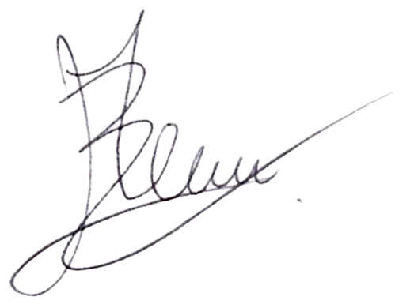

Signature des STK
Ouvrir PDF
Enregistrer
Outils
Ajouter Texte
Techniciens
David Obrist
David Blaser
Alexis Medus

Marvin Blaser
Aucun fichier chargé
Glissez un rapport STK ici
ou utilisez le bouton Ouvrir
100%